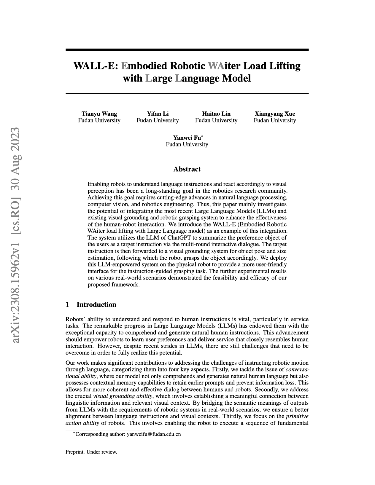

|
Fudan University
|
Enabling robots to understand language instructions and react accordingly to visual perception has been a long-standing goal in the robotics research community. Achieving this goal requires cutting-edge advances in natural language processing, computer vision, and robotics engineering. Thus, this paper mainly investigates the potential of integrating the most recent Large Language Models (LLMs) and existing visual grounding and robotic grasping system to enhance the effectiveness of the human-robot interaction. We introduce the WALL-E (Embodied Robotic WAiter load lifting with Large Language model) as an example of this integration. The system utilizes the LLM of ChatGPT to summarize the preference object of the users as a target instruction via the multi-round interactive dialogue. The target instruction is then forwarded to a visual grounding system for object pose and size estimation, following which the robot grasps the object accordingly. We deploy this LLM-empowered system on the physical robot to provide a more user-friendly interface for the instruction-guided grasping task. The further experimental results on various real-world scenarios demonstrated the feasibility and efficacy of our proposed framework.
|  |
T. Wang, Y. Li, H. Lin, J. Huang, X. Xue, Y. Fu
WALL-E: Embodied Robotic WAiter Load Lifting with Large Language Model Preprint. Under review (ICRA 2024). [arXiv] [Code] |
Acknowledgements
Yanwei Fu is the corresponding author. If you are interested in this work, you can contact Professor Y. Fu via email: yanweifu@fudan.edu.cn.
The website is modified from this template.
|